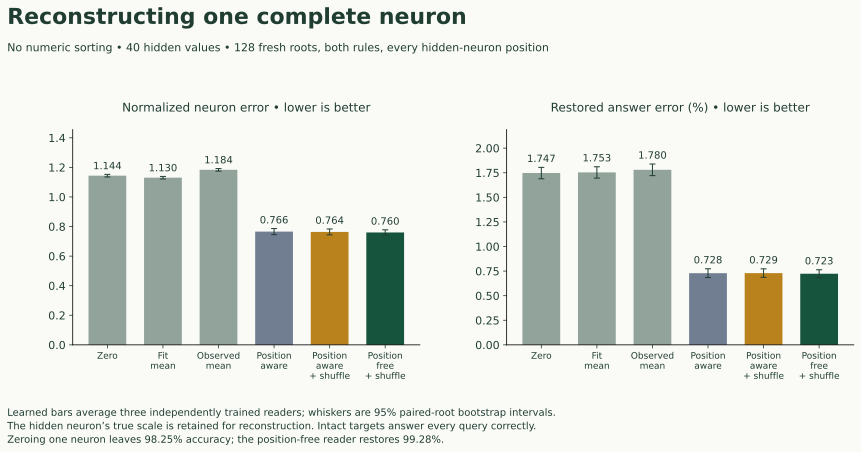
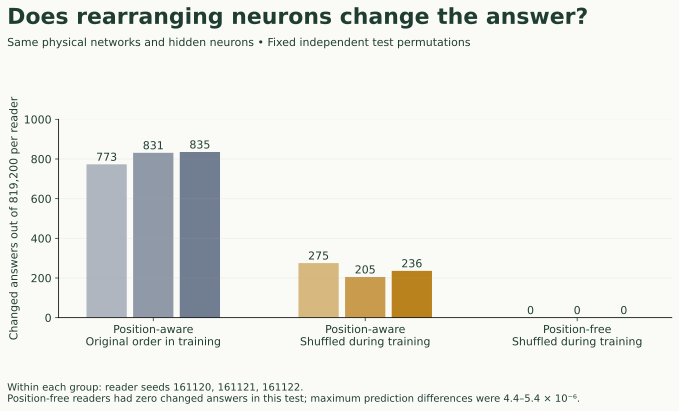

NO-SORT NEURON COMPLETION
Can Lens fill in a missing neuron?
The idea behind Synaptic Lens is pretty simple: I want to do to model weights what language models do to language. Learn enough about the relationships between them to make useful predictions.
For this experiment, I wanted to try something concrete. Take an adder network, hide one whole neuron, and ask Lens to predict the missing weights. Then put those predictions back into the original network and see how it behaves.
A neuron here means the whole bundle: its incoming weights, its bias, and its outgoing weights. Forty values in total.
Teaching it not to care about order
A functionally identical network can be arranged a tremendous number of ways without changing its behavior. Those arrangements add no new information. For this experiment, I wanted Lens to learn to treat them that way.
So we shuffled the neurons during training, moving each neuron's incoming weights, bias, and outgoing weights together. We also tried a transformer without positional embeddings. It can pay attention to the relationships between neurons without treating their positions in the file as part of their identity.
We normalize the neurons as well. These targets use ReLU, so we can scale a neuron's incoming weights and bias and compensate in its outgoing weights. That gives Lens a more consistent representation to work with. The framework keeps the original scale separately and uses it when putting the prediction back into the original network.
We don't sort the neurons by their values in this experiment. The missing neuron is chosen independently of its weights, and Lens sees none of its 40 values. It predicts the normalized bundle; the framework supplies the saved scale for reconstruction.
The test
We trained three versions: a transformer with positions, the same design trained with shuffled neurons, and the position-free version trained with shuffled neurons. Each had about 3.2 million parameters, and we trained each version three times with different random seeds.
Training used 768 independent network roots, with separate groups of 128 for model selection and final evaluation. Each root supplied two arithmetic rules. We split the roots before making shuffled versions, so a rearranged copy of a training network couldn't slip into the final test.
We hid every neuron, one at a time, across all 32 positions. For each replacement, we tested all 100 pairs of input digits. We also compared against leaving the neuron blank, using an average neuron from the training networks, and averaging the neurons still visible in the target.
What happened
The position-free Lens brought arithmetic accuracy to 99.28%, compared with 98.25% when the missing neuron was left blank. Weight-prediction error was about a third lower. The intact target networks answered every question correctly.

The three trained approaches were close on accuracy. The interesting difference showed up when we shuffled the test networks.
The positional models trained without shuffling changed hundreds of answers when we moved the same neurons around. Training with shuffles reduced that sensitivity. The position-free models kept every answer the same across 819,200 comparisons per training seed, for all three seeds. Their predicted weights stayed the same to floating-point precision too.
That's the behavior I wanted: moving a neuron around in the representation shouldn't change what Lens thinks belongs in the missing part.

Try it
The example lets you choose a neuron, inspect its actual and predicted weights, and see what changes in the network's answers. It includes all 32 choices from the first evaluation target, so you can explore the variation yourself.
Some neurons matter more to a particular answer than others. The useful question is what happens when we remove one, and how much of that behavior comes back when Lens fills it in.
This gives us a working version of the whole process: prepare the network, hide a neuron, predict its weights, and put the result back into the original network. And we can do that without making the prediction depend on an arbitrary neuron order.
Run inference · Train a reader
View all nine development learning curves (saved development measurements, separate from final evaluation).